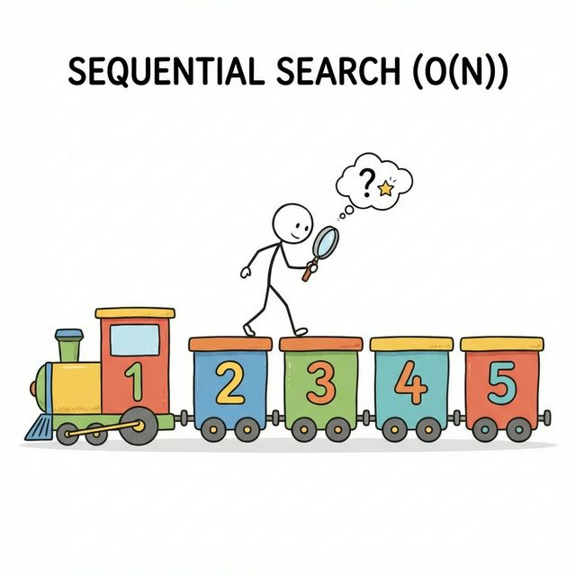
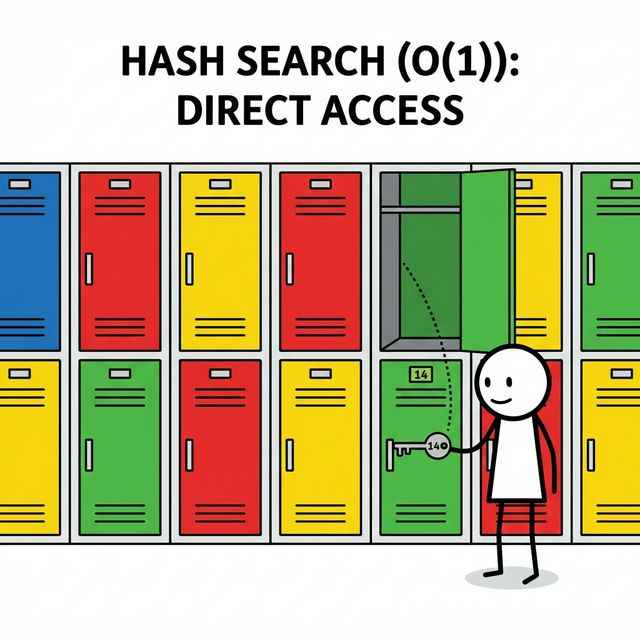

3주차 3강: 파이썬 딕셔너리 심화 (Python Dictionary Deep Dive)
학습목표: 딕셔너리의 내부 구조(Hash Table)를 이해하고, 리스트와의 차이점을 명확히 알며, 데이터를 효율적으로 다루는 고급 테크닉을 익힙니다.
3.3.1. 배열의 진화: 순차 배열 vs 연관 배열
프로그래밍에서 데이터를 저장하는 방식은 크게 두 가지로 나뉩니다.
3.3.1.1. 순차 배열 (Sequential Array) = 리스트
- 특징: 데이터가 순서대로 나열되어 있으며, 인덱스(번호)로 접근합니다.
- 단점: “사과”가 어디 있는지 찾으려면 첫 번째 칸부터 끝까지 다 열어봐야 합니다. (속도: O(N))
- 비유: 기차 (1호차, 2호차… 순서대로 연결됨)

3.3.1.2. 연관 배열 (Associative Array) = 딕셔너리
- 특징: 데이터가 키(Key)와 값(Value)의 쌍으로 저장됩니다. 순서는 중요하지 않습니다.
- 장점: “사과”라는 이름표(Key)만 알면, 위치를 바로 알 수 있습니다. (속도: O(1))
- 비유: 사물함 (번호키만 알면 내 물건을 바로 찾음)

3.3.2. 리스트 vs 딕셔너리 비교 (List vs Dict)
상황에 따라 적절한 자료구조를 선택하는 것이 실력입니다.
| 비교 항목 | 리스트 (List) | 딕셔너리 (Dictionary) |
|---|---|---|
| 순서 (Order) | 있음 (Index 0, 1, 2…) | 있음 (Python 3.7+ 부터 입력 순서 유지) |
| 접근 방법 | 인덱스 (ls[0]) |
키 (dt['key']) |
| 검색 속도 | 느림 (데이터 많을수록 느려짐) | 매우 빠름 (데이터 많아도 즉시 찾음) |
| 중복 허용 | 값 중복 O | 키 중복 X (값은 중복 가능) |
| 사용 예시 | 시계열 데이터, 로그 기록 | 회원 정보, 설정값, 전화번호부 |
Tip: “이름으로 뭔가를 찾아야 한다”면 무조건 딕셔너리를 쓰세요!
3.3.3. 빈번하게 쓰이는 메서드 (Useful Methods)
3.3.3.1. get(): 안전하게 값 가져오기
없는 키를 찾으면 에러(KeyError) 대신 None이나 기본값을 반환합니다.
profile = {'name': 'Antigravity'}
# print(profile['age']) # KeyError! (프로그램 멈춤)
age = profile.get('age', 20) # 'age' 키가 없으면 20을 반환
print(age) # 20
3.3.3.2. keys(), values(), items(): 조회하기
keys(): 키 목록만 가져옴values(): 값 목록만 가져옴items(): 키와 값을 튜플 쌍으로 가져옴 (반복문에서 자주 사용)
scores = {'math': 90, 'eng': 85}
for subject, score in scores.items():
print(f"{subject}: {score}")
# math: 90
# eng: 85
3.3.3.3. update(): 딕셔너리 합치기
두 개의 딕셔너리를 하나로 합칩니다. 키가 겹치면 뒤의 값으로 덮어씁니다.
a = {'x': 1, 'y': 2}
b = {'y': 3, 'z': 4}
a.update(b)
print(a) # {'x': 1, 'y': 3, 'z': 4} ('y'는 3으로 업데이트됨)
3.3.4. 딕셔너리 컴프리헨션 (Dict Comprehension)
리스트 컴프리헨션처럼 딕셔너리도 한 줄로 만들 수 있습니다. 전처리에서 매핑(Mapping) 테이블을 만들 때 매우 유용합니다.
names = ['Alice', 'Bob', 'Charlie']
ids = [101, 102, 103]
# 두 리스트를 합쳐서 딕셔너리로!
student_dict = {name: id_num for name, id_num in zip(names, ids)}
print(student_dict)
# {'Alice': 101, 'Bob': 102, 'Charlie': 103}
정리 (Summary)
이 강의에서 배운 핵심 내용을 요약해 봅시다.
- [핵심 1]: 딕셔너리는 키(Key)와 값(Value) 쌍으로 데이터를 저장합니다.
- [핵심 2]: 해시(Hash) 구조 덕분에 검색 속도가 매우 빠릅니다. (O(1))
- [핵심 3]:
items(),keys(),values()로 반복문에서 쉽게 다룰 수 있습니다.